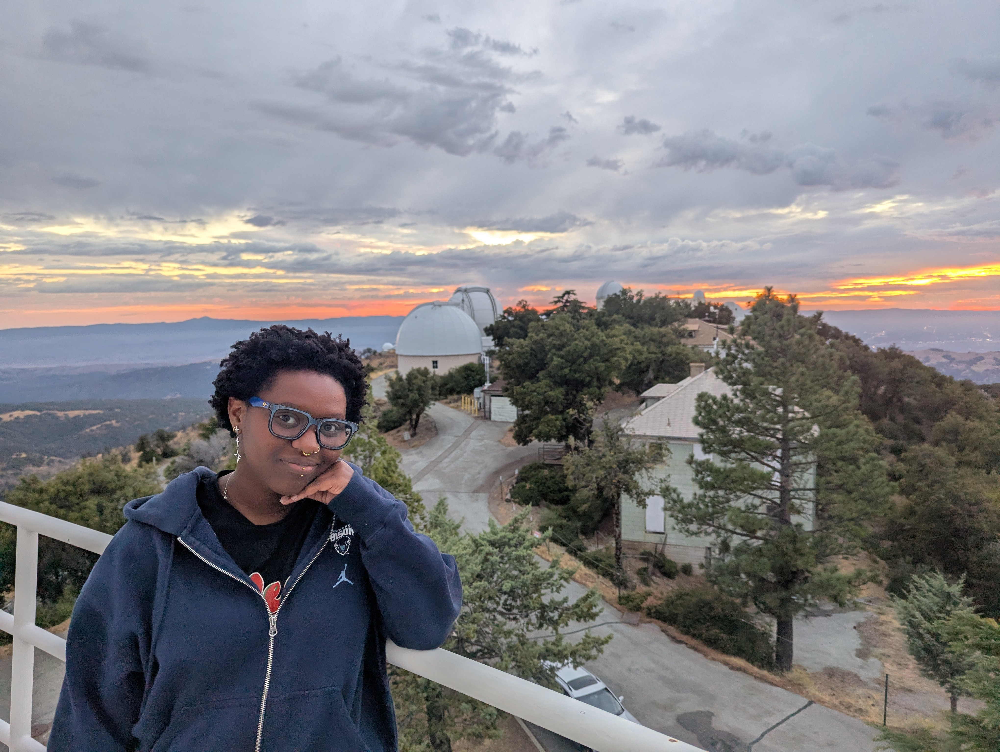

.

Kennedi J. White
2nd Year PhD Student
University of California, Santa Cruz| Santa Cruz, CA
Welcome to my site! I study radda radda.
What I'm Interested In Doing
Radda Radda description on what im currently doing
- Exoplanet Interiors/Evolutions: descriptoon
- Exoplanet Atmospheres: description
- Solar System: description